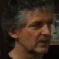

Rita Vercauteren
7e Dan • Hoofdtrainer
Trainer A (BLOSO). Voormalig lid Belgische Nationale Judo Ploeg. 13 keer kampioen van België tussen 1970 en 1985.
De club
Judoclub Goshin VZW is een familiale club met een sterke pedagogische én competitieve traditie. We trainen op een eigen tatami van 191 m² in Sint-Amandsberg.
Trainers
Rita Vercauteren
7e Dan • Hoofdtrainer
Trainer A (BLOSO). Voormalig lid Belgische Nationale Judo Ploeg. 13 keer kampioen van België tussen 1970 en 1985.

Franklin Pereira Reyes
6e Dan • Trainer A (BLOSO)
Licentiaat Lichamelijke Opvoeding. Trainer Topsportschool Antwerpen. Voormalig lid Cubaanse nationale ploeg, 8× kampioen van Cuba, winnaar A-Tornooi Roma 1996.

Jean Mercier
2e Dan • Jeugdsportbegeleider
Belgisch kampioen Masters 2013 & 2015 (-73 kg). Provinciaal en internationaal succes als junior.

Gabriël Spataru
1e Dan • Jeugdsportbegeleider
Belgisch kampioen Masters 2015 (-81 kg). 10 shiai-punten als 1e Kyu.

Maarten Floré
1e Dan • Voorzitter
Licentiaat orthopedagogiek. Kampioen van Vlaanderen Juniors 1994 en meerdere ereplaatsen op nationale en internationale tornooien.

Emmanuel Tandoh
1e Dan • Aspirant initiator
Aspirant initiator (Judo Vlaanderen). Begeleidt jeugdgroepen en initiatielessen.
Bestuur
Maarten Floré
Voorzitter

Bart Schelfhout
Secretaris & ledenadministratie
Rita Vercauteren
Penningmeester
Gabriël Spataru
Jeugdtrainer
David Verween
Begeleider competities
Franklin Pereira Reyes
Trainer
Laurence Declunder
Ledenadministratie
Filosofie
Judo is een Japanse vechtsport, geïntroduceerd door meester Jigoro Kano in 1882. De naam betekent letterlijk de zachte weg: techniek primeert op kracht, en samenwerken op overheersen.
Twee spreuken vatten de geest van judo samen — en vormen ook bij Goshin de leidraad op de tatami:
Seiryoku-zen'yō
Maximale effectiviteit met minimale inzet — gebruik de kracht van de tegenstander om hem ten val te brengen.
Jita Kyōei
Wederzijds profijt en welbevinden — leer samenwerken om sterker te worden, samen.
Erkende judoclub — lid van